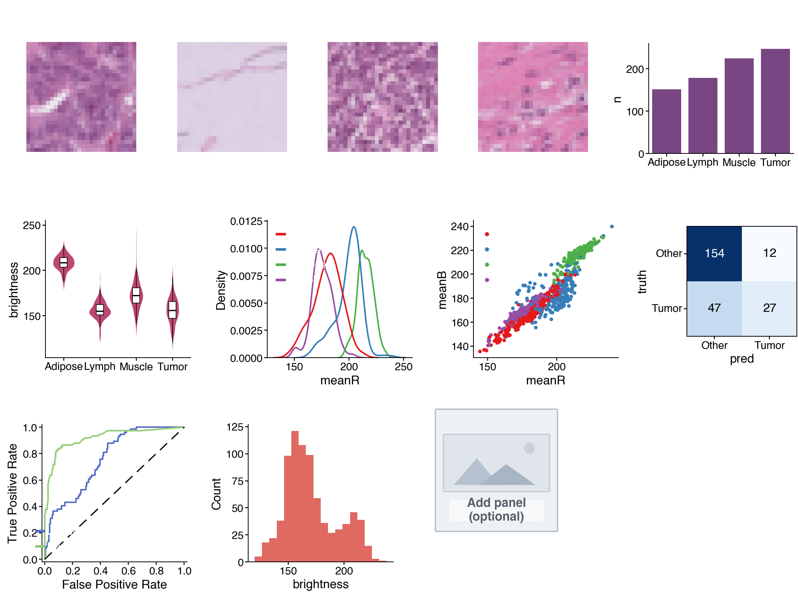

Lab 4 — pandas & Journal-Style Figures with cnsplots
Goal
By the end of this lab you will practise pandas feature tables and cnsplots multi-panel figures on a real medical imaging dataset. You will load PathMNIST colorectal histology images, build colour/brightness features, explore differences across tissue types, run a small classification teaser, and assemble your own multi-panel scientific figure.
This lab is Python only (Colab recommended, or VS Code locally).
How to work: you will build a notebook from a blank file, type each cell by hand, run it, and observe the output. You do not need to memorise APIs — type along, understand each step, then customise your own figure at the end.
Business / clinical context: you are a data analyst working with a Pathology department. Every day, clinicians produce thousands of tissue image patches from colorectal cancer biopsies. Manual review is slow and tiring. The department asks: “Analyse this histology set — how do tissue types differ? Can we separate tumor from non-tumor using data? Present the findings as one scientific figure for a tumour-board report.”
This is a data-assisted diagnosis scenario — a realistic healthcare analytics use case. In this lab you will: use pandas to turn images into a feature table → explore tissue differences → try a small model to predict tumor → present everything as a multi-panel, Nature-style figure with cnsplots.
Takeaway: turning raw data into a convincing scientific visual is a skill that helps your analysis get heard — in healthcare, business, or research.
PathMNIST: a curated colorectal histology image set (28×28 RGB), each image with a tissue-type label, open licence (CC BY 4.0). Because the figure uses images and labels from the same set, the visuals match the data you analyse.
Learning objectives
- Load data and build a feature table with pandas.
- Read, understand, and edit cnsplots charting code.
- Compose charts into one publication-style multi-panel figure.
- Interpret the figure: what does it say about the data?
Prepare (once)
Download the data: get pathmnist.npz from:
https://zenodo.org/records/10519652/files/pathmnist.npz?download=1
(Open the link in a browser; the file downloads automatically — a few hundred MB.)
Create a blank notebook:
- Colab (recommended — nothing to install): go to colab.research.google.com → File → New notebook. Then open the Files icon (left sidebar) → Upload → choose
pathmnist.npz. (The file lands in/contentand is ready to use. If the runtime restarts, upload again.) - Local machine (VS Code): create a new file
lab4.ipynbin the same folder aspathmnist.npz.
From here, each Cell N below is one code cell you type into the notebook and run (Shift+Enter).
Build the notebook — cell by cell
Cell 1 — Install packages
!pip install -q cnsplots scikit-learn
(On a machine where these are already installed, you can skip this, or run pip install cnsplots scikit-learn in a terminal.)
Cell 2 — Imports
import os
import numpy as np
import pandas as pd
import matplotlib.pyplot as plt
import cnsplots as cns
from sklearn.linear_model import LogisticRegression
from sklearn.ensemble import RandomForestClassifier
from sklearn.model_selection import train_test_split
print("cnsplots", cns.__version__)
Cell 3 — Load PathMNIST
pathmnist.npz is a NumPy archive with images + labels (no medmnist / torch required).
data = np.load("pathmnist.npz")
imgs = data["train_images"] # (N, 28, 28, 3) — N images, each 28×28 colour
labels = data["train_labels"].flatten() # tissue-type label per image
print("Images:", imgs.shape[0], "| each image shape:", imgs.shape[1:])
If you see "No such file": check that
pathmnist.npzis in the working directory (Colab: did you Upload?; local: same folder as the notebook).
Cell 4 — pandas: build a feature table
Each image → mean brightness of channels R, G, B plus overall brightness. Keep four representative tissue types and use short names so charts stay readable.
SHORT = {0: "Adipose", 3: "Lymph", 5: "Muscle", 8: "Tumor"} # 4 tissue types
order = ["Adipose", "Lymph", "Muscle", "Tumor"]
rng = np.random.default_rng(0)
idx = np.where(np.isin(labels, list(SHORT)))[0] # images in the 4 classes
idx = rng.choice(idx, size=min(800, idx.size), replace=False) # sample up to 800
sub_imgs, sub_lab = imgs[idx], labels[idx]
df = pd.DataFrame({
"label": [SHORT[l] for l in sub_lab],
"meanR": sub_imgs[:, :, :, 0].mean(axis=(1, 2)),
"meanG": sub_imgs[:, :, :, 1].mean(axis=(1, 2)),
"meanB": sub_imgs[:, :, :, 2].mean(axis=(1, 2)),
})
df["brightness"] = df[["meanR", "meanG", "meanB"]].mean(axis=1)
df.head()
Cell 5 — Get familiar with the table (pandas)
df.describe() # descriptive stats
df["label"].value_counts() # image count per tissue type
Cell 6 — Quick plot (matplotlib)
df["brightness"].plot(kind="hist", bins=20, title="Brightness distribution")
plt.show()
Cell 7 — Two models → data for confusion matrix & ROC
Predict Tumor vs Other from colour features (classification teaser).
X = df[["meanR", "meanG", "meanB", "brightness"]].values
y = (df["label"] == "Tumor").astype(int).values
Xtr, Xte, ytr, yte = train_test_split(X, y, test_size=0.3, random_state=0, stratify=y)
lr = LogisticRegression(max_iter=500).fit(Xtr, ytr)
rf = RandomForestClassifier(n_estimators=120, random_state=0).fit(Xtr, ytr)
pred = lr.predict(Xte); m = {0: "Other", 1: "Tumor"}
conf_df = pd.DataFrame({"truth": [m[v] for v in yte], "pred": [m[v] for v in pred]})
roc_df = pd.DataFrame({"label": yte,
"Logistic": lr.predict_proba(Xte)[:, 1],
"RandomForest": rf.predict_proba(Xte)[:, 1]})
print("Accuracy:", round((pred == yte).mean(), 3))
Build a multi-panel FIGURE (main part)
cnsplots idea: create a multipanel “frame”, add each panel with mp.panel("A", width, height); use mp.newline() to start a new row; finish with cns.savefig(...).
Sample figure for reference (one complete result you can aim toward — yours does not need to look identical):

The sample above includes: four representative tissue images + sample counts (row 1); brightness violin, colour-channel KDE, colour-space scatter (row 2); confusion matrix, two-model ROC, histogram, empty panel (row 3). This is only one example — in the next section you choose panels and layout yourself.
Cell 8 — Figure frame + a few starter panels
Type this cell first to learn the mechanism (it builds a 3-panel figure):
def first_img(cls_id): # one representative image for a tissue class
return imgs[np.where(labels == cls_id)[0][0]]
mp = cns.multipanel(max_width=560,
title="Figure 1 — Colorectal Histology Analysis",
title_fontweight="bold", loc="left")
# Panel A: one tumor tissue image
ax = mp.panel("A", 72, 72); ax.imshow(first_img(8)); ax.set_title("Tumor", fontsize=7); ax.set_axis_off()
# Panel B: barplot of sample counts per type
mp.panel("B", 95, 72, color_cycle="Bold")
cnt = df["label"].value_counts().reindex(order).reset_index(); cnt.columns = ["label", "n"]
ax = cns.barplot(data=cnt, x="label", y="n", order=order); ax.set_title("Sample count"); ax.set_xlabel("")
# Panel C: colour-space scatter
mp.panel("C", 95, 72, color_cycle="Set1")
ax = cns.scatterplot(data=df, x="meanR", y="meanB", hue="label", s=5); ax.set_title("Color space")
ax.get_legend().set_title(None)
cns.savefig("Figure.png") # use .pdf / .svg for vector output in reports
print("Saved Figure.png")
Run the cell → you should see a 3-panel figure A–B–C. This is the skeleton. Your task in the next section: add more panels to make a larger, polished figure that is yours.
Requirement — YOUR figure, not a clone
Expand the Cell 8 figure into a larger layout (at least 6 panels) by picking extra panels from the menu below and adding new rows with mp.newline(). Every student should produce a different figure depending on panels and layout.
How to start a new row (place between panels):
mp.newline() # new row; use margin_top=16 on the first panel of a row for breathing room
Panel menu (copy into your figure, then edit)
① Tissue image (add another class — IDs: 0=Adipose, 3=Lymph, 5=Muscle, 8=Tumor):
ax = mp.panel("D", 72, 72); ax.imshow(first_img(0)); ax.set_title("Adipose", fontsize=7); ax.set_axis_off()
② Violin — distribution of one feature by tissue type:
mp.panel("E", 95, 90, margin_top=16, color_cycle="Ecotyper3")
ax = cns.violinplot(data=df, x="label", y="brightness", order=order); ax.set_title("Brightness"); ax.set_xlabel("")
③ KDE — density of one colour channel:
mp.panel("F", 95, 90, margin_top=16, color_cycle="Set1")
ax = cns.kdeplot(data=df, x="meanR", hue="label"); ax.set_title("meanR density"); ax.get_legend().set_title(None)
④ Histogram:
mp.panel("G", 95, 90, margin_top=16)
ax = cns.histplot(data=df, x="brightness"); ax.set_title("Brightness hist")
⑤ Confusion matrix (uses conf_df from Cell 7):
mp.panel("H", 72, 80, margin_top=16)
ax = cns.confusionplot(data=conf_df, x="pred", y="truth", add_pvalue=False,
x_order=["Other","Tumor"], y_order=["Other","Tumor"], cmap="Blues")
ax.set_title("Confusion")
⑥ ROC (uses roc_df from Cell 7):
mp.panel("I", 95, 90, margin_top=16, color_cycle="ECharts")
ax = cns.rocplot(roc_df, "label", ["Logistic", "RandomForest"]); ax.set_title("ROC")
⑦ Boxplot / ⑧ Placeholder (space reserved for later):
mp.panel("J", 95, 90, margin_top=16)
ax = cns.boxplot(data=df, x="label", y="meanG", order=order); ax.set_title("meanG"); ax.set_xlabel("")
# or:
mp.panel("K", 80, 80, margin_top=16); cns.placeholderplot("Add panel\n(optional)")
Remember: keep
cns.savefig("Figure.png")as the last line (after all panels) so the figure is saved as an image for the report in the submission section. Label panels (A, B, C…) in the order you add them.(Colab: after running, download
Figure.pngvia Files → right-click → Download.)
Required for submission: figure with ≥ 6 panels, including at least 1 tissue-image panel and at least 1 model-evaluation panel (confusion or ROC). Beyond that, customise: change colour cycles, titles, or create a new pandas feature (e.g. df["ratioRB"] = df["meanR"]/df["meanB"]) and plot it.
Interpret the figure — what does it say?
Answer from your own figure:
Q1 — Class balance. Which tissue type has the most / fewest samples? Is the data balanced? Why does that matter?
Q2 — Discriminative features. Looking at violin / KDE / scatter: which tissue is brightest / darkest? Do any pairs overlap in colour space and look hard to separate? What does that suggest about recognising tissue from colour alone?
Q3 — Model quality. On the confusion matrix, how many Tumor cases are correct / wrong? On the ROC, which model is better? If AUC = 1.00, is that realistic, or is the task too easy?
Q4 — Clinical meaning. Are colour features alone enough to help a clinician separate cancer? Should this tool replace or support the clinician?
Write a figure caption (2–3 sentences) as in a paper, summarising what your figure shows.
What to submit — ONE PDF only
You do not submit the notebook. Instead, write a short report in Word (.docx), export to .pdf, and submit only that PDF.
Report steps
- Create a new Word file (Microsoft Word, or Google Docs — both can export PDF).
- Insert the figure: Insert → Picture, choose the
Figure.pngyou saved above. Centre it on the page. - Fill in the sections using the structure below.
- Export PDF: Word → File → Save As / Export → PDF (Google Docs → File → Download → PDF).
- Name the file
Lab4_FullName_StudentID.pdfand submit only this PDF.
Submission folder / LMS link will be announced in class (or on the course site when published).
Report structure (~1–2 pages)
- Title: Lab 4 — Full name, student ID, class.
- 1. Figure: your figure (paste
Figure.png) plus a figure caption (2–3 sentences) summarising what it shows. - 2. Analysis — answer Q1–Q4 (above): 2–4 lines each.
- 3. Customisation note: which panels you added/changed relative to the Cell 8 skeleton and why (2–3 lines).
Suggested grading weights: figure meets requirements & is clear (40%) · Q1–Q4 analysis (35%) · creativity / customisation (25%).
Note: submit PDF only. Do not submit the
.ipynbnotebook or the original.docx.
Common troubleshooting
| Problem | Fix |
|---|---|
No such file: pathmnist.npz |
Colab: Upload again (Files → Upload). Local: put the file next to the notebook |
ModuleNotFoundError: cnsplots |
Re-run Cell 1: !pip install -q cnsplots scikit-learn |
| Axis labels overlapping | Shorten class names, or increase margin_top on the first panel of a row |
| Figure looks cramped | Increase max_width in cns.multipanel(...) |
get_legend() returns None |
That panel has no legend — remove the .get_legend()... line |
References
- cnsplots — docs & examples: https://cnsplots.farid.one/latest (Getting Started, Examples Gallery).
- PathMNIST / MedMNIST v2 — dataset: https://medmnist.com (CC BY 4.0).
- Course lecture notes: Week 4 slides /
lec4.md(pandas + cnsplots).